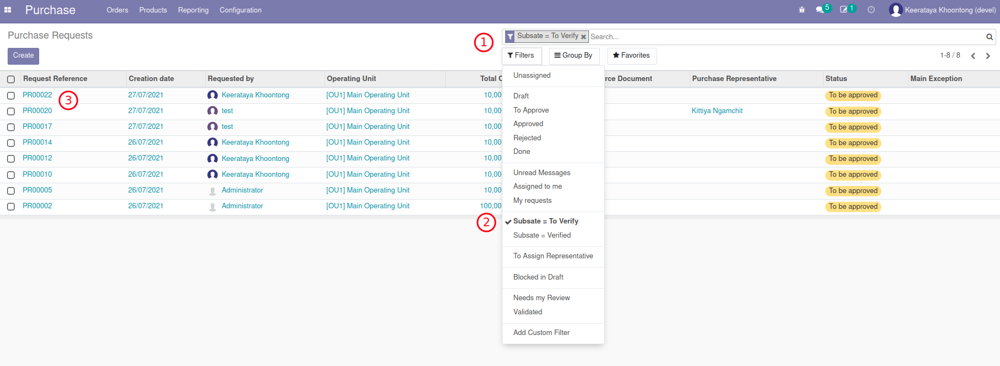
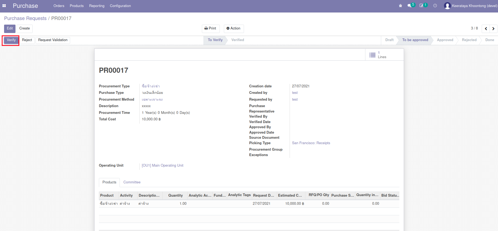
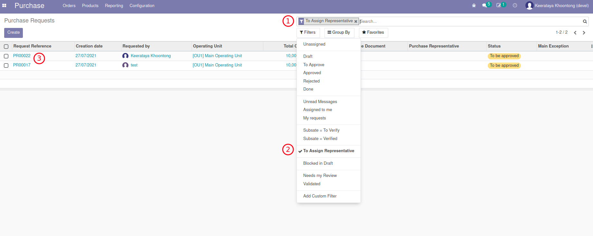
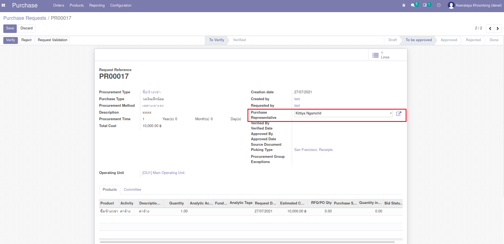

กระบวนการขอซื้อขอจ้าง (Purchase Request)#
เอกสารนี้สำหรับ :: หัวหน้าเจ้าหน้าที่พัสดุ (Procurement Head)
ตรวจสอบเอกสาร#
Menu :: Purchase > Orders > Purchase Requests
-
ค้นหารายการ Purchase Request เพื่อทำการตรวจสอบ
- ลบตัวกรองเดิม (My requests)
- กรองหา Custom Filter ด้วย Substate = To Verify
- ระบบจะแสดงรายการที่รอการตรวจสอบ

-
อนุมัติการตรวจสอบเอกสาร (Verify)
- เลือก Purchase Request ที่ต้องการอนุมัติ
- ถ้าเรียบร้อย กดปุ่ม Verify สถานะ Substate เปลี่ยนเป็น Verified (อนุมัติแล้ว)

Note
- ถ้าไม่เรียบร้อย กดปุ่ม Reject เพื่อปฏิเสธคำขอ
-
หลังจาก Verify ระบบ จะ Request Validation ให้อัตโนมัติ เพื่อขออนุมัติงบประมาณ
ขั้นตอนนี้จะส่งเอกสารไปยังผู้ที่เกี่ยวข้องกับการอนุมัติวงเงินตามอำนาจหน้าที่ ซึ่งบุคคลที่เกี่ยวข้องตามตารางอนุมัติจะทำหน้าการอนุมัติ (หรือปฏิเสธ) หากเอกสารได้รับการอนุมัติจากคนสุดท้ายแล้ว สถานะของเอกสารจะเปลี่ยน State = Approved
End.
มอบหมายงานให้เจ้าหน้าที่พัสดุ#
Menu :: Purchase > Orders > Purchase Requests
-
ค้นหารายการ Purchase Request ที่ยังไม่มีเจ้าหน้าที่รับผิดชอบ
- ลบตัวกรองเดิม (My requests)
- เลือกตัวกรอง To Assign Representative
- ระบบจะแสดงรายการที่ยังไม่มีผู้รับผิดชอบ

-
เลือกรายการที่ต้องการเพื่อทำการมอบหมายงาน
- กดปุ่ม Edit
- เลือก Purchase Responsible และกด Save

End.